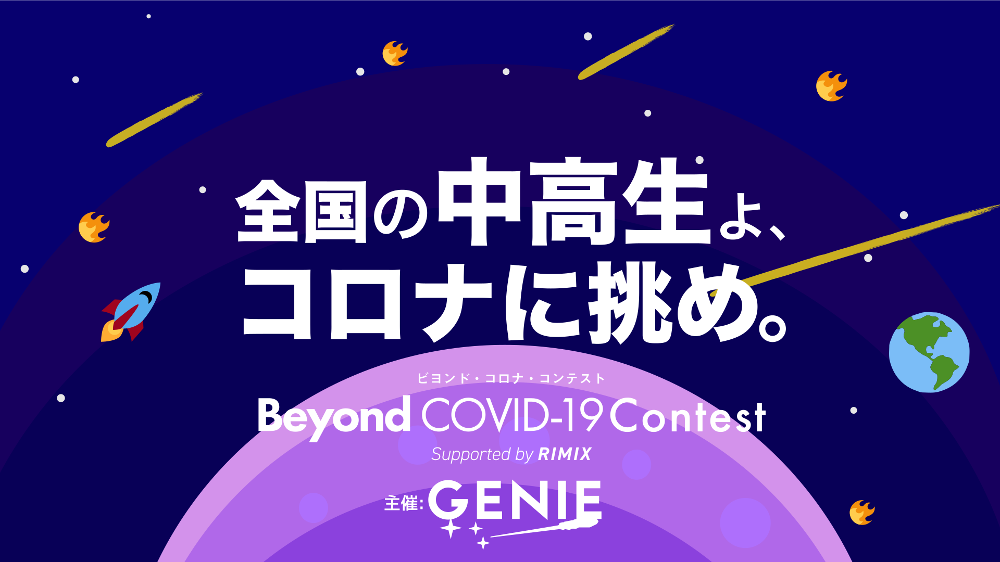
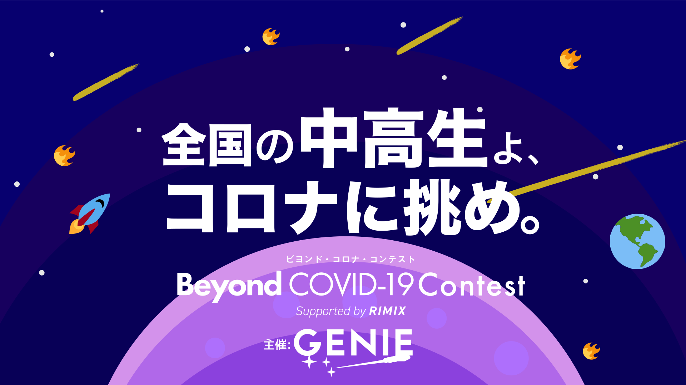
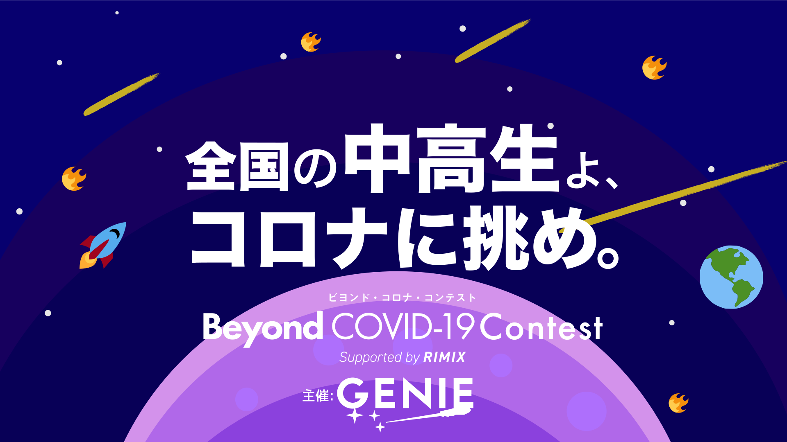
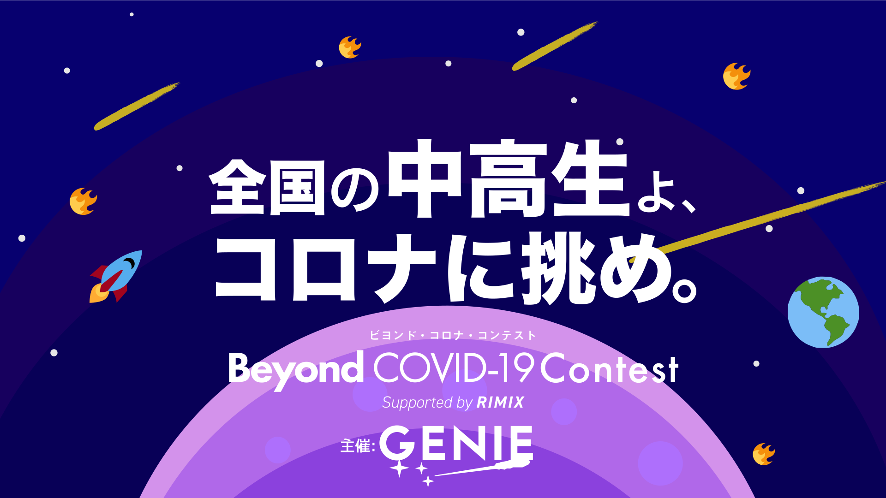
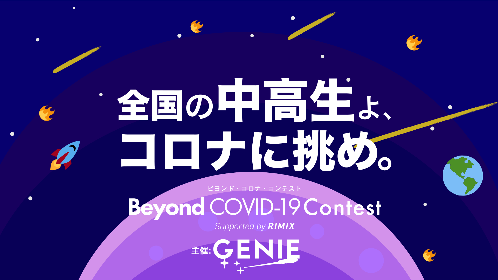
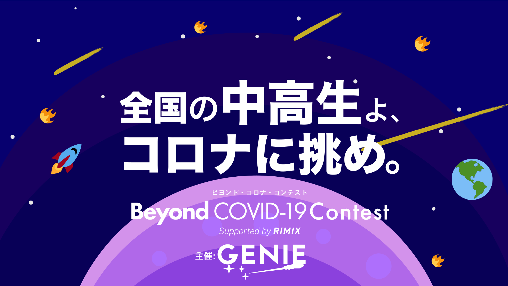

コロナショックをビヨンド(乗り越える)するためのコンテスト、ということで「ビヨンド・コロナ・コンテスト」という名前になっています。
ビヨンド・コロナ・コンテストは中高生が主体となり、全国の中高生がコロナによる自粛期間でできることや、新たに得た学びを発信するオンラインコンテストです。
ビヨンド・コロナ・コンテストでは、３つのテーマから１つ選んでもらいます。
最終的には、グランプリが審査委員によって選ばれます。表彰式はオンラインで行う予定をしています。簡単に参加できるので是非参加してください！！
新型コロナウイルの感染拡大による緊急事態宣言が全国に発令されてから約1ヶ月が経ちました。
多くの中高生が自宅待機を余儀なくされています。コロナの影響を受け、インターハイや甲子園が中止され、入学したのに入学式がなかったり様々なイベントが中止されています。 このコンテストは、そんな私たちの青春を奪ったコロナの流行を乗り越えるために開催されます。 そして、全国の中高生のコロナ生活や、新しく学んだことを募集し、それらをオープンにすることで、日本全体に希望をもたらせようというのが、このプロジェクトの目的です。みなさんも応募して日本を明るくしていきませんか？応募はカンタン！写真を撮ってコメントを書いてLINEで提出！！LINEを持っていない方は親のLINEで提出してもらってください。
新型コロナウイルスの感染拡大で様々な社会活動が停止しているなか、私たち高校生には何かできることはないのかを考えた結果、私たちが学生ならば、いろんな学生を巻き込めば学生として何か社会に貢献できるのではないかと思い行動に移しました。このコンテストは、そんなコロナ禍の状況にいる
高校生が主体となって運営している
コンテストです。発案、企画、ホームページ作成など、全て高校生が行っています。
運営をしている私たちについて

テーマ① チャレンジ

裁縫は私の苦手分野です。しかし、今回は苦手なことにもチャレンジしてみよう！と思い、マスクを作ってみました〜！生地は着なくなった服です。お花柄で可愛く出来ました！また、工夫もしたんです。マスクを付けていると、息がしづらいですよね。なので、湿らせたガーゼを入れる部分も付けました。可愛くて、自分オリジナルの快適マスク！！！途中でミシンが壊れるというハプニングもありましたが、挑戦して良かったです。
テーマ② ゴハン

今回は牛乳だけを使って料理をしました。料理名は「蘇」です。蘇は昔のチーズのような物で、牛乳を煮詰めるだけでできてしまいます！！超簡単！！実際に作ってみると、火が強すぎたらしく、焦げちゃいました（笑）。でも作るのに牛乳を思ったより使用できたのでよかったです!!!!
テーマ ③オウエン
多くの人が自宅待機や自粛、テレワークをしている中、医療関係者の方は、現場で日々目に見えない敵と戦っています。
今回私はそんな人たちのことを思って書きました。書いてみると、一人ひとりが外出を控える意思が大切なんだと、感じるようになりました。外出することで感染する可能性が高まり、医療崩壊が現実味を帯びてきます。
医療現場で頑張っている人たちについて考える機会ができてよかったです。
立命館守山高等学校GENIE
Beyond COVID-19 supported by RIMIX
立命館社会起業家育成プラットフォームRIMIX
立命館大学Sustainable Week実行委員会
5/1〜5/31(予定)